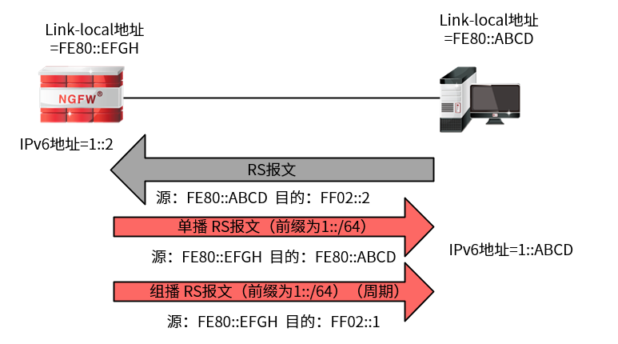
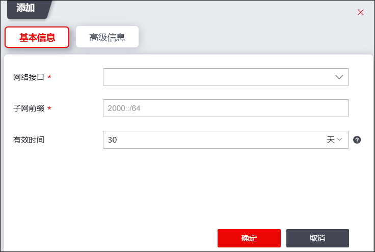
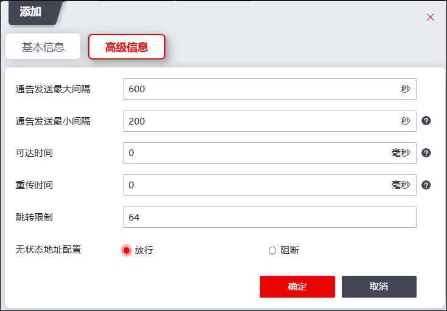

IPv6网络中的主机自动获取IPv6地址技术分为两种，一种是有状态（stateful）地址自动配置，典型代表是DHCPv6，具体请参见 DHCPv6；一种是无状态（stateless）地址自动配置，典型代表是RADVD（Router Advertisement Daemon），具体请参见本章节。
IPv6网络在有状态地址自动配置方式下，主要采用动态主机配置协议（DHCPv6），需要配备专门的DHCPv6服务器，网络接口通过客户机/服务器模式从DHCPv6服务器处得到地址配置信息，通过DHCPv6服务器获取的地址为完整的IPv6地址。在无状态地址自动配置方式下，只需防火墙启用RADVD功能，客户端主机即可通过接收防火墙宣告的IPv6地址前缀，再结合其自身的接口ID得到一个IPv6地址。
以RADVD为代表的无状态地址自动配置不需要消耗很多机器资源，也不需要像DHCPv6那样维护本地数据库来记录地址分配状况，只是广播地址前缀，客户端主机收到广播的前缀后结合本地接口ID便可生成IPv6地址。这使得接入到IPv6网络中的主机，无需进行任何网络配置，只要其链路的路由设备支持RADVD功能，即可自动获取到局部或全局可路由的IPv6地址，与IPv6网络中的其他主机进行通信，实现了主机接入网络的即插即用。
RADVD工作原理
主机通过防火墙的RADVD功能自动获取IPv6地址，包括如下三个过程：
1）主机通过与防火墙交互RS和RA报文，获取防火墙RADVD功能宣告的前缀信息，并结合前缀和自身接口ID生成IPv6地址。
2）主机向链路其他节点发送NS报文，验证地址唯一性。
3）主机初始化接口，地址生效。
报文交互过程

图中FF02::1为链路本地范围所有节点组播地址，FF02::2为链路本地范围所有路由设备组播地址。FE80::ABCD和FE80::EFCD为链路本地地址，链路本地地址的组成：FE80+接口ID。
1）主机节点启用IPv6协议后，自动生成链路本地地址，发送RS报文，请求RADVD的前缀信息。
2）RADVD收到RS报文后，发送单播RA报文，携带用于无状态地址自动配置的前缀信息1::/64。同时，RADVD也会周期性地发送组播RA报文。
3）主机收到RA报文后，根据前缀信息和接口ID生成一个临时的全球单播地址1::ABCD。同时启动DAD，发送NS报文验证临时地址的唯一性，此时该地址处于临时状态。
4）链路上的其他节点收到DAD的NS报文后，如果没有用户使用该地址，则丢弃报文，否则产生应答NS的NA报文。
5）主机如果没有收到DAD的NA报文，说明地址是全局唯一的，则用该临时地址初始化接口，此时地址进入有效状态。
| 步骤1 | 选择 。 |
| 步骤2 | 启用/关闭RADVD。 |
点击“启用/禁用”可切换RADVD功能的状态。
| 步骤3 | 添加RADVD。 |
1）点击【添加】，弹出“添加”窗口，如下图所示。

在添加RADVD基本信息项时，各项参数的具体说明如下表所示。
参数 |
说明 |
|---|---|
网络接口 |
设置RADVD通过哪个接口发送出去。此处配置的网络接口可以为路由模式接口、MAC子接口、VLAN虚接口及聚合接口，不支持TAG子接口、虚拟线模式接口、交换模式接口及VSYS虚接口。 |
子网前缀 |
必填项，发送给客户端主机的前缀。子网前缀标识了客户端主机所连接的子网。只支持64位。 |
有效时间 |
配置有效生命周期。默认值为1天。 当有效生命周期终止时，地址及它与接口的关联变成无效。一个无效的地址不能被用作通信的源地址，也不能被识别为目的地址。 |
2）激活“高级信息”页签，如下图所示。

在添加RADVD高级信息时，各项参数的具体说明如下表所示。
参数 |
说明 |
|---|---|
通告发送最大间隔 |
必填项，配置定期发送路由通告消息（RA）的最大间隔时间。单位为秒（s），取值范围为4-1800，默认值为600。 |
通过发送最小间隔 |
可选项，配置定期发送路由通告消息（RA）的最小间隔时间。单位为秒（s），取值范围为1-max*0.75，默认值为max/3。 |
可达时间 |
必填项，设置可达时间。在客户端主机收到邻居的可达性确认后，可以假定在这段时间内邻居是可达的。单位为毫秒（ms），取值范围为0-3600000，默认值为0。0表示路由器没有作出规定。 |
重传时间 |
必填项，设置重新传输计时器，表示发送NS消息后开始计时，超出设定的时间后进行重传。单位为毫秒（ms），取值范围为0-4294967295，默认值为0。0表示路由器没有作出规定。 |
跳转限制 |
必填项，配置跳数为报文转发时经过的路由器个数。取值范围为0-255，默认值为64。 当报文由路由设备转发时，跳数计数器会减1，如果跳数计数值达到0时，报文仍没有到达目的地，则该目的地被认为是不可达的，并且报文被丢弃。 |
无状态地址配置 |
选择是否启用该无状态地址的配置。默认放行。 放行：主机接口能够自动生成直连路由，根据前缀自动配置IPv6地址； 禁止：主机接口能够自动生成直连路由，但不会自动配置IPv6地址。 |
3）点击【确定】按钮完成RADVD项的添加。RADVD项添加完成后默认处于关闭状态。